CHEBFUN GUIDE 2: INTEGRATION AND DIFFERENTIATION
Lloyd N. Trefethen, November 2009, revised February 2011
Contents
2.1 sum
We have seen that the "sum" command returns the definite integral of a chebfun over its range of definition. The integral is normally calculated by an FFT-based variant of Clenshaw-Curtis quadrature, as described first in [Gentleman 1972]. This formula is applied on each fun (i.e., each smooth piece of the chebfun), and then the results are added up.
Here is an example whose answer is known exactly:
f = chebfun('log(1+tan(x))',[0 pi/4]); format long I = sum(f) Iexact = pi*log(2)/8
I = 0.272198261287950 Iexact = 0.272198261287950
Here is an example whose answer is not known exactly, given as the first example in the section "Numerical Mathematics in Mathematica" in The Mathematica Book [Wolfram 2003].
f = chebfun('sin(sin(x))',[0 1]);
sum(f)
ans = 0.430606103120691
All these digits match the result 0.4306061031206906049... reported by Mathematica.
Here is another example:
F = @(t) 2*exp(-t.^2)/sqrt(pi); f = chebfun(F,[0,1]); I = sum(f)
I = 0.842700792949715
The reader may recognize this as the integral that defines the error function evaluated at t=1:
Iexact = erf(1)
Iexact = 0.842700792949715
It is interesting to compare the times involved in evaluating this number in various ways. Matlab's specialized erf code is the fastest:
tic, erf(1), toc
ans = 0.842700792949715 Elapsed time is 0.000066 seconds.
Using Matlab's various quadrature commands is understandably slower:
tol = 3e-14;
tic, I = quad(F,0,1,tol); t = toc;
fprintf(' QUAD: I = %17.15f time = %6.4f secs\n',I,t)
tic, I = quadl(F,0,1,tol); t = toc;
fprintf(' QUADL: I = %17.15f time = %6.4f secs\n',I,t)
tic, I = quadgk(F,0,1,'abstol',tol,'reltol',tol); t = toc;
fprintf('QUADGK: I = %17.15f time = %6.4f secs\n',I,t)
QUAD: I = 0.842700792949715 time = 0.0109 secs QUADL: I = 0.842700792949715 time = 0.0030 secs QUADGK: I = 0.842700792949715 time = 0.0036 secs
The timing for Chebfun comes out very competitive:
tic, I = sum(chebfun(F,[0,1])); t = toc;
fprintf('CHEBFUN: I = %17.15f time = %6.4f secs\n',I,t)
CHEBFUN: I = 0.842700792949715 time = 0.0101 secs
Here is a similar comparison for a function that is more difficult, because of the absolute value, which leads with "splitting on" to a chebfun consisting of a number of funs.
F = @(x) abs(besselj(0,x)); f = chebfun(@(x) abs(besselj(0,x)),[0 20],'splitting','on'); plot(f)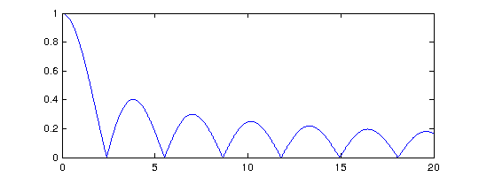
tol = 3e-14;
tic, I = quad(F,0,20,tol); t = toc;
fprintf(' QUAD: I = %17.15f time = %5.3f secs\n',I,t)
tic, I = quadl(F,0,20,tol); t = toc;
fprintf(' QUADL: I = %17.15f time = %5.3f secs\n',I,t)
tic, I = quadgk(F,0,20,'abstol',tol,'reltol',tol); t = toc;
fprintf(' QUADGK: I = %17.15f time = %5.3f secs\n',I,t)
tic, I = sum(chebfun(@(x) abs(besselj(0,x)),[0,20],'splitting','on')); t = toc;
fprintf('CHEBFUN: I = %17.15f time = %5.3f secs\n',I,t)
QUAD: I = 4.445031603001505 time = 0.337 secs QUADL: I = 4.445031603001576 time = 0.168 secs QUADGK: I = 4.445031603001578 time = 0.021 secs CHEBFUN: I = 4.445031603001566 time = 0.304 secs
This last example highlights the piecewise-smooth aspect of Chebfun integration. Here is another example of a piecewise smooth problem.
x = chebfun('x');
f = sech(3*sin(10*x));
g = sin(9*x);
h = min(f,g);
plot(h)
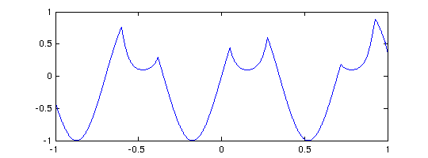 Here is the integral:
tic, sum(h), toc
ans = -0.381556448850250 Elapsed time is 0.005054 seconds.
For another example of a definite integral we turn to an integrand given as example F21F in [Kahaner 1971]. We treat it first in the default mode of splitting off:
x = chebfun('x',[0 1]);
f = sech(10*(x-0.2)).^2 + sech(100*(x-0.4)).^4 + sech(1000*(x-0.6)).^6;
The function has three spikes, each ten times narrower than the last:
plot(f)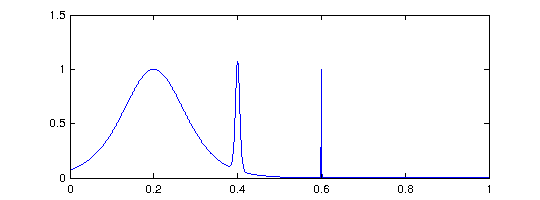
The length of the global polynomial representation is accordingly quite large, but the integral comes out correct to full precision:
length(f) sum(f)
ans =
13933
ans =
0.210802735500549
With splitting on, we get a much shorter chebfun since the narrow spike is isolated; and the integral is the same:
splitting on f = sech(10*(x-0.2)).^2 + sech(100*(x-0.4)).^4 + sech(1000*(x-0.6)).^6; splitting off length(f) sum(f)
ans = 405 ans = 0.210802735500549
Incidentally, if you are dealing with functions with narrow spikes like this, it is a good idea to increase the value of "minsamples" as described in Section 8.6.
As mentioned in Chapter 1 and described in more detail in Chapter 9, Chebfun has some capability of dealing with functions that blow up to infinity. Here for example is a familiar integral:
f = chebfun(@(x) 1./sqrt(x),[0 1],'blowup',2);
sum(f)
ans = 2.000000000000000
Certain integrals over infinite domains can also be computed, though the error is often large:
f = chebfun(@(x) 1./x.^2.5,[1 inf]); sum(f)
ans = 0.666666582757373
Chebfun is not a specialized item of quadrature software; it is a general system for manipulating functions in which quadrature is just one of many capabilities. Nevertheless Chebfun compares reasonably well as a quadrature engine against specialized software. This was the conclusion of the Oxford MSc thesis by Phil Assheton [Assheton 2008], which compared Chebfun experimentally to quadrature codes including Matlab's quad and quadl, Gander and Gautschi's adaptsim and adaptlob, Espelid's modsim, modlob, coteda, and coteglob, QUADPACK's QAG and QAGS, and the NAG Library's d01ah. In both reliability and speed, Chebfun was found to be competitive with these alternatives. The overall winner was coteda [Espelid 2003], which was typically about twice as fast as Chebfun. For further comparisons of quadrature codes, together with the development of some improved codes based on a philosophy that has something in common with Chebfun, see [Gonnet 2009]. See also "Using Chebfun as an integrator" in the Quadrature section of the online Chebfun Examples collection.
2.2 norm, mean, std, var
A special case of an integral is the "norm" command, which for a chebfun returns by default the 2-norm, i.e., the square root of the integral of the square of the absolute value over the region of definition. Here is a well-known example:
norm(chebfun('sin(pi*theta)'))
ans =
1
If we take the sign of the sine, the norm increases to sqrt(2):
norm(chebfun('sign(sin(pi*theta))','splitting','on'))
ans = 1.414213562373095
Here is a function that is infinitely differentiable but not analytic.
f = chebfun('exp(-1./sin(10*x).^2)');
plot(f)
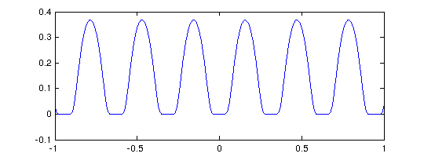 Here are the norms of f and its tenth power:
norm(f), norm(f.^10)
ans =
0.292873834331035
ans =
2.187941295308668e-05
2.3 cumsum
In Matlab, "cumsum" gives the cumulative sum of a vector,
v = [1 2 3 5] cumsum(v)
v =
1 2 3 5
ans =
1 3 6 11
The continuous analogue of this operation is indefinite integration. If f is a fun of length n, then cumsum(f) is a fun of length n+1. For a chebfun consisting of several funs, the integration is performed on each piece.
For example, returning to an integral computed above, we can make our own error function like this:
t = chebfun('t',[-5 5]); f = 2*exp(-t.^2)/sqrt(pi); fint = cumsum(f); plot(fint,'m') ylim([-0.2 2.2]), grid on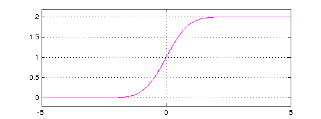
The default indefinite integral takes the value 0 at the left endpoint, but in this case we would like 0 to appear at t=0:
fint = fint - fint(0); plot(fint,'m') ylim([-1.2 1.2]), grid on
The agreement with the built-in error function is convincing:
[fint((1:5)') erf((1:5)')]
ans = 0.842700792949715 0.842700792949715 0.995322265018953 0.995322265018953 0.999977909503001 0.999977909503001 0.999999984582742 0.999999984582742 0.999999999998463 0.999999999998463
Here is the integral of an oscillatory step function:
x = chebfun('x',[0 6]); f = x.*sign(sin(x.^2)); subplot(1,2,1), plot(f) g = cumsum(f); subplot(1,2,2), plot(g,'m')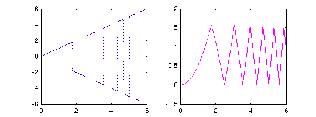
And here is an example from number theory. The logarithmic integral, Li(x), is the indefinite integral from 0 to x of 1/log(s). It is an approximation to pi(x), the number of primes less than or equal to x. To avoid the singularity at x=0 we begin our integral at the point mu = 1.451... where Li(x) is zero, known as Soldner's constant. The test value Li(2) is correct except in the last digit:
mu = 1.45136923488338105; % Soldner's constant
xmax = 400;
Li = cumsum(chebfun(@(x) 1./log(x),[mu xmax]));
lengthLi = length(Li)
Li2 = Li(2)
lengthLi = 498 Li2 = 1.045163780117491
(Chebfun has no trouble if xmax is increased to 10^5 or 10^10.) Here is a plot comparing Li(x) with pi(x):
clf, plot(Li,'m') p = primes(xmax); hold on, plot(p,1:length(p),'.k')

The Prime Number Theorem implies that pi(x) ~ Li(x) as x -> infinity. Littlewood proved in 1914 that although Li(x) is greater than pi(x) at first, the two curves eventually cross each other infinitely often. It is known that the first crossing occurs somewhere between x=1e14 and x=2e316 [Kotnik 2008].
The "mean", "std", and "var" commands have also been overloaded for chebfuns and are based on integrals. For example
mean(chebfun('cos(x).^2',[0,10*pi]))
ans = 0.500000000000000
2.4 diff
In Matlab, "diff" gives finite differences of a vector:
v = [1 2 3 5] diff(v)
v =
1 2 3 5
ans =
1 1 2
The continuous analogue of this operation is differentiation. For example:
f = chebfun('cos(pi*x)',[0 20]); fprime = diff(f); hold off, plot(f) hold on, plot(fprime,'r')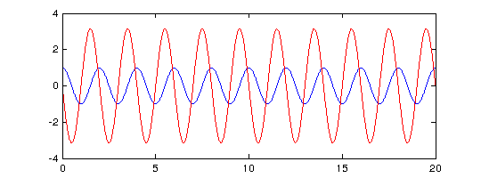
If the derivative of a function with a jump is computed, then a delta function is introduced. Consider for example this function defined piecewise:
f = chebfun('x.^2',1,'4-x','4./x',0:4); hold off, plot(f)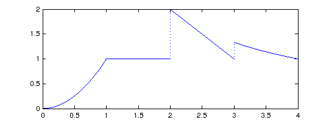
Here is the derivative:
fprime = diff(f);
plot(fprime,'r'), ylim([-2,3])
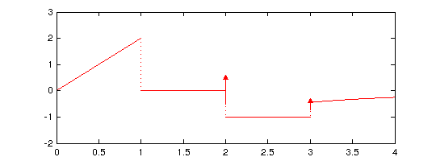 The first segment of f' is linear, since f is quadratic here. Then comes a segment with f' = 0, since f is constant. And the end of this second segment appears a delta function of amplitude 1, corresponding to the jump of f by 1. (Currently delta functions are not shown on Chebfun plots.) The third segment has constant value f' = -1. Finally another delta function, this time with amplitude 1/3, takes us to the final segment.
Thanks to the delta functions, cumsum and diff are essentially inverse operations. It is no surprise that differentiating an indefinite integral returns us to the original function:
norm(f-diff(cumsum(f)))
ans =
2.384759296696501e-15
More surprising is that integrating a derivative does the same, so long as we add in the value at the left endpoint:
d = domain(f); f2 = f(d(1)) + cumsum(diff(f)); norm(f-f2)
ans =
9.113148969974502e-16
Multiple derivatives can be obtained by adding a second argument to "diff". Thus for example,
f = chebfun('1./(1+x.^2)');
g = diff(f,4); plot(g)
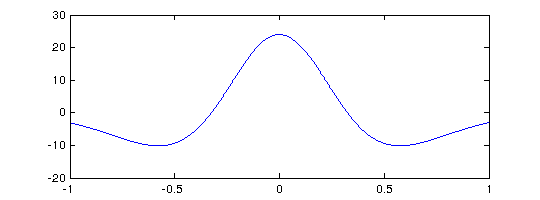 However, one should be cautious about the potential loss of information in repeated differentiation. For example, if we evaluate this fourth derivative at x=0 we get an answer that matches the correct value 24 only to 11 places:
g(0)
ans = 23.999999999991854
For a more extreme example, suppose we define a chebfun for exp(x) on [-1,1]:
f = chebfun('exp(x)');
length(f)
ans =
15
Since f is a polynomial of low degree, it cannot help but lose information rather fast as we differentiate, and 15 differentiations eliminate the function entirely.
for j = 0:length(f) fprintf('%6d %19.12f\n', j,f(1)) f = diff(f); end
0 2.718281828459
1 2.718281828459
2 2.718281828457
3 2.718281828383
4 2.718281826455
5 2.718281786871
6 2.718281132921
7 2.718272328888
8 2.718175329055
9 2.717303458798
10 2.710978859256
11 2.674699013359
12 2.515714356525
13 2.014161265242
14 0.997296814603
15 0.000000000000
Is such behavior "wrong"? Well, that is an interesting question. Chebfun is behaving correctly in the sense mentioned in the second paragraph of Section 1.1: the operations are individually stable in that each differentiation returns the exact derivative of a function very close to the right one. The trouble is that because of the intrinsically ill-posed nature of differentiation, the errors in these stable operations accumulate exponentially as successive derivatives are taken.
Section 10.3 describes an alternative method of differentiating functions via automatic differentiation. Here is an example:
x = chebfun('x'); f = sin(30*exp(x)); g = f.*exp(x); gprime = diag(diff(g,x)); subplot(1,2,1), plot(g), title g subplot(1,2,2), plot(gprime), title('g''')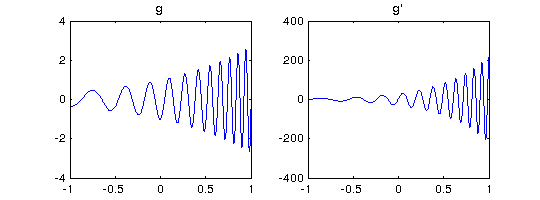
2.5 Integrals in two dimensions
Chebfun can often do a pretty good job with integrals over rectangles. Here for example is a colorful function:
r = @(x,y) sqrt(x.^2+y.^2); theta = @(x,y) atan2(y,x);
f = @(x,y) sin(5*(theta(x,y)-r(x,y))).*sin(x);
x = -2:.02:2; y = 0.5:.02:2.5; [xx,yy] = meshgrid(x,y);
clf, contour(x,y,f(xx,yy),-1:.2:1),
axis([-2 2 0.5 2.5]), colorbar, grid on
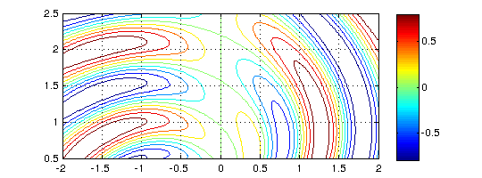 We can compute the integral over the box like this. Notice the use of the flag 'vectorize' to construct a chebfun from a function only defined for scalar arguments.
Iy = @(y) sum(chebfun(@(x) f(x,y),[-2 2])); tic; I = sum(chebfun(@(y) Iy(y),[0.5 2.5],'vectorize')); t = toc; fprintf('CHEBFUN: I = %16.14f time = %5.3f secs\n',I,t)
CHEBFUN: I = 0.02041246545700 time = 0.482 secs
Here for comparison is Matlab's dblquad/quadl with a tolerance of 1e-11:
tic; I = dblquad(f,-2,2,0.5,2.5,1e-11,@quadl); t = toc;
fprintf('DBLQUAD/QUADL: I = %16.14f time = %5.3f secs\n',I,t)
DBLQUAD/QUADL: I = 0.02041246545700 time = 5.242 secs
This example of a 2D integrand is smooth, so both Chebfun and dblquad can handle it to high accuracy. The results will be quite different for less smooth integrands, and typically one will need to lower the tolerance. In Chebfun, this can be done by the chebfunpref command, as described in Chapter 8. For this example, however, there is not much speedup:
tic; I = sum(chebfun(@(y) Iy(y),[0.5 2.5],'vectorize','eps',1e-6)); t = toc; fprintf('CHEBFUN: I = %16.14f time = %5.3f secs\n',I,t)
CHEBFUN: I = 0.02041246390472 time = 0.481 secs
2.6 Gauss and Gauss-Jacobi quadrature
For quadrature experts, Chebfun contains some powerful capabilities implemented by Nick Hale. To start with, suppose we wish to carry out 4-point Gauss quadrature over [-1,1]. The quadrature nodes are the zeros of the degree 4 Legendre polynomial LEGPOLY(4), which can be obtained from the Chebfun command LEGPTS, and if two output arguments are requested, LEGPTS provides weights also:
[s,w] = legpts(4)
s = -0.861136311594053 -0.339981043584856 0.339981043584856 0.861136311594053 w = Columns 1 through 3 0.347854845137454 0.652145154862546 0.652145154862546 Column 4 0.347854845137454
To compute the 4-point Gauss quadrature approximation to the integral of exp(x) from -1 to 1, for example, we could now do this:
x = chebfun('x');
f = exp(x);
Igauss = w*f(s)
Iexact = exp(1) - exp(-1)
Igauss = 2.350402092156377 Iexact = 2.350402387287603
There is no need to stop at 4 points, however. Here we use 1000 Gauss quadrature points:
tic [s,w] = legpts(1000); Igauss = w*f(s) toc
Igauss = 2.350402387287593 Elapsed time is 0.041324 seconds.
Even 100,000 points doesn't take too long:
tic [s,w] = legpts(100000); Igauss = w*f(s) toc
Igauss = 2.350402387288065 Elapsed time is 3.809291 seconds.
Traditionally, numerical analysts have computed Gauss quadrature nodes and weights by the eigenvalue algorithm of Golub and Welsch [Golub & Welsch 1969]. However, Chebfun uses the different algorithm of Glaser, Liu and Rokhlin [Glaser, Liu & Rokhlin 2007] with enhancements due to Hale and Sheehan Olver (unpublished).
For Legendre polynomials, Legendre points, and Gauss quadrature, use LEGPOLY and LEGPTS. For Chebyshev polynomials, Chebyshev points, and Clenshaw-Curtis quadrature, use CHEBPOLY and CHEBPTS and the built-in Chebfun commands such as SUM. A third variant is also available: for Jacobi polynomials, Gauss-Jacobi points, and Gauss-Jacobi quadrature, see JACPOLY and JACPTS. These arise in integration of functions with singularities at one or both endpoints, and are used internally by Chebfun for integration of chebfuns with singularities (Chapter 9).
As explained in the help texts, all of these operators work on general intervals [a,b], not just on [-1,1].
2.7 References
[Assheton 2008] P. Assheton, Comparing Chebfun to Adaptive Quadrature Software, dissertation, MSc in Mathematical Modelling and Scientific Computing, Oxford University, 2008.
[Espelid 2003] Terje O. Espelid, "Doubly adaptive quadrature routines based on Newton-Cotes rules," BIT Numerical Mathematics 43 (2003), 319-337.
[Gentleman 1972] W. M. Gentleman, "Implementing Clenshaw-Curtis quadrature I and II", Journal of the ACM 15 (1972), 337-346 and 353.
[Glaser, Liu & Rokhlin 2007] A. Glaser, X. Liu and V. Rokhlin, "A fast algorithm for the calculation of the roots of special functions", SIAM Journal on Scientific Computing 29 (2007), 1420-1438.
[Golub & Welsch 1969] G. H. Golub and J. H. Welsch, "Calculation of Gauss quadrature rules," Mathematics of Computation 23 (1969), 221-230.
[Gonnet 2009] P. Gonnet, Adaptive Quadrature Re-Revisited, ETH dissertation no. 18347, Swiss Federal Institute of Technology, 2009.
[Hale & Trefethen 2012] N. Hale and L. N. Trefethen, Chebfun and numerical quadrature, Science in China, submitted, 2012.
[Kahaner 1971] D. K. Kahaner, "Comparison of numerical quadrature formulas", in J. R. Rice, ed., Mathematical Software, Academic Press, 1971, 229-259.
[Kotnik 2008] T. Kotnik, "The prime-counting function and its analytic approximations", Advances in Computational Mathematics 29 (2008), 55-70.
[Wolfram 2003] S. Wolfram, The Mathematica Book, 5th ed., Wolfram Media, 2003.